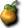
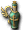

活動「神之領域綠化計畫」
活動褒賞
掉落備忘
留言
活動「神之領域綠化計畫」
----- 公告內容(2008.04.30) -----
活動「神之領域綠化計畫」舉辦
感謝您平日對『神之領域』的愛護。
從今天起舉辦活動「神之領域綠化計畫」。
【活動期間】
4月30日～5月14日（至維護前）
【活動概要】
培育樹苗，取得果實吧！
果實裡面藏著道具！？
【活動內容】
1.神之領域內各處會長出結果的樹。
2.從部分怪物身上收集20個「礦泉水」。
3.把礦泉水澆給結果的樹，樹就會成長並獲得果實。
※帶著礦泉水的狀態下點擊結果的樹，就能給它澆水。
4.使用果實就能獲得各種道具。
※澆礦泉水時，
一起給予偶爾才能獲得的「不可思議的肥料」，就能得到新品種的果實。
【褒賞例】
・三度笠
・稱號「世界滅亡危機」
・稱號「神之領域綠化」
※獎賞是使用果實後獲得。
一個果實對應一個道具。
今後也請多多支持『神之領域』。
神之領域營運團隊
----- 到此為止 -----
【詳細內容】
神之領域內各鎮的各處會長出結果的樹。
盧亞斯森林5 米魯里斯森林7 斯歐米森林5 魯克西翁森林3 魔界村森林4 加利卡拉森林1
會出現環保小烏鵝，打倒後可獲得礦泉水。
極少數情況下也會獲得「不可思議的肥料」。
※「不可思議的肥料」無法放進背包，且不可轉讓。
活動褒賞

【熟透的果實】礦泉水 赫爾莉克夏 史黛莉克夏 瑪娜莉克夏
速度藥水(超高速) 快速藥水(90秒) 特製摩斯果汁
熟透的果實 不可思議的肥料 全效藥水(10個)
【香氣濃郁的果實】
稱號捲軸 礦泉水 赫爾莉克夏 熟透的果實
特殊稱號捲軸 ←可放進背包，但不可放地上轉讓。已經擁有特殊稱號時不會有任何反應。
※「熟透的果實」「香氣濃郁的果實」無法放進背包且不可轉讓，但放在地上讓別的角色撿是可以的。
掉落備忘

礦泉水、 不可思議的肥料
不可思議的肥料留言
目前顯示最新的10件。請參閱留言頁面
礦泉水是從什麼敵人身上掉的呢，哪位能告訴我嗎(w＿－; 嗚嗚·· -- 迷路者? 2008-05-05 (一) 07:58:17
環保小烏鵝 -- 2008-05-05 (一) 13:24:04
環保小烏鵝 -- 2008-05-05 (一) 13:24:06
從香氣濃郁的果實裡出了礦泉水耶・・・ -- 那個啊? 2008-05-06 (二) 22:49:23
熟透的果實和香氣濃郁的果實我都轉讓得出去耶。。 -- 2008-05-10 (六) 18:38:05
&#